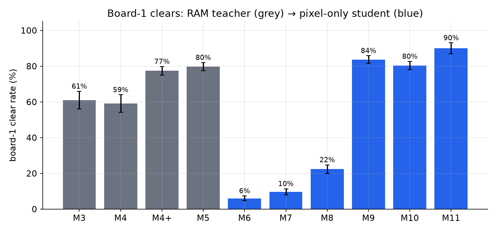
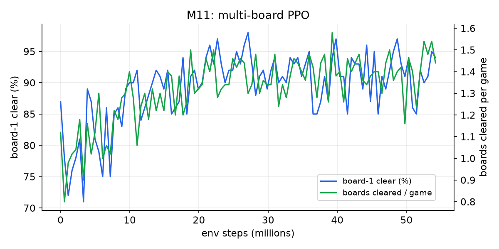
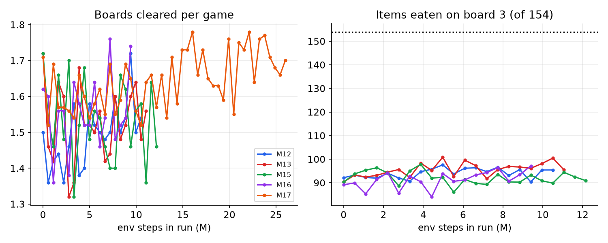
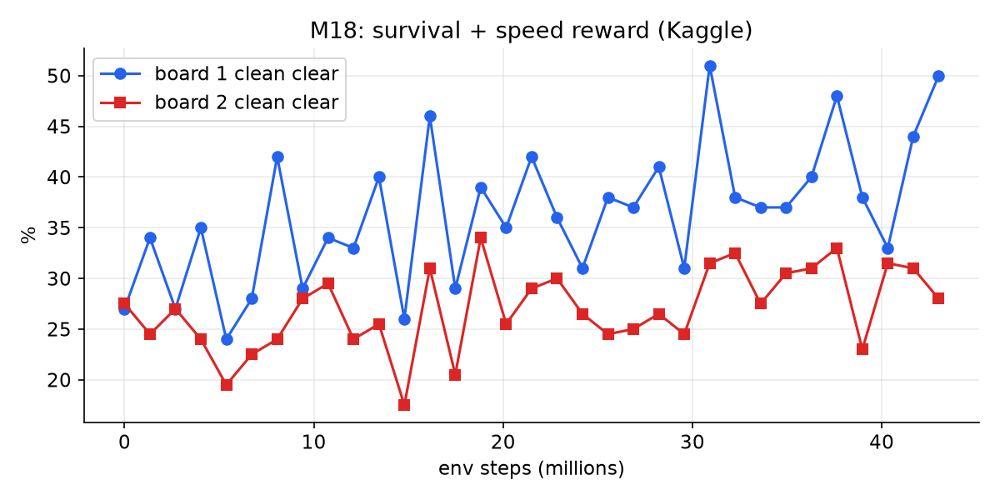
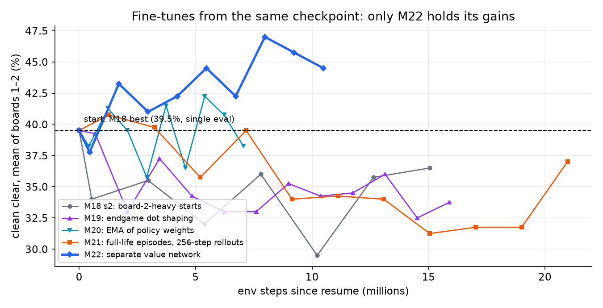
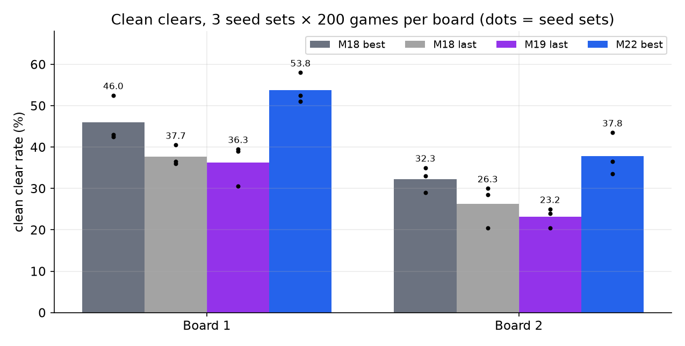
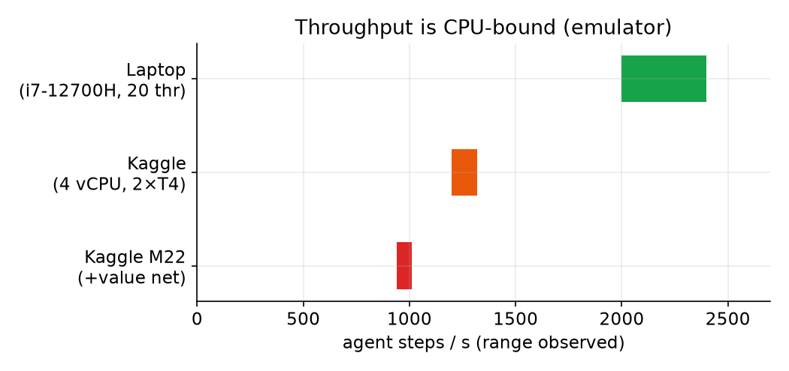

Technical report · October 2026
Clearing Ms. Pac-Man boards from pixels
Abstract
Most Atari agents for Ms. Pac-Man maximise score, which mostly means farming ghosts. This project targets a harder goal: clearing whole boards (all 150 dots and 4 power pellets) from raw 84×84 grayscale pixels under sticky actions. Two months of pixel-only attempts (Rainbow, behaviour cloning, return-conditioned DAgger, Go-Explore, LLM players) never produced a single board clear, because every teacher they learned from never cleared either. The restart built a RAM-based Hybrid Reward Architecture (HRA) planner that clears board 1 in 79.7% of held-out games. That planner was distilled into a pixel-only sliding-window attention (SWA) policy with 7,992,501 parameters, then fine-tuned with PPO: board-1 clears went from 6% after distillation to 83.7% (300 held-out games), and multi-board training reached 1.40 boards per game. For clean clears (no life lost), four fine-tunes in a row drifted below their start. Two changes fixed that: giving the value function its own network, and fixing a bug that skipped the value warm-up on resumed runs. The final model (M22) reaches 53.8% / 37.8% clean clears on boards 1 / 2 against 46.0% / 32.3% for its starting checkpoint, both measured on the same 3 seed sets × 200 games.
0. Origins and approach
The project began in August 2026 as a score-chasing DQN/DRQN experiment on a laptop RTX 3060 (CleanRL-based, pacman-ddqn) and grew into a second codebase, mspacman-rainbow. Early on the goal changed from score to clearing a board. A high score can be pure ghost farming, so a clear was defined as the maze actually changing in emulator RAM, never as a score threshold.
Phase 1: pixel agents that never cleared (Aug – Sep 2026)
| Attempt | Best logged result | Board clears |
|---|---|---|
| Rainbow-lite, 2M steps | mean score 2006 (best game 4610) | 0 / 48 |
| SWA-v2 (CNN token per frame, W=16, d=512, ~8.0M params) behaviour cloning | mean 2248 | 0 |
| Return-conditioned (score-goal) DAgger chain C1→C5 | C3-300k mean 3243, best 3780; c4 best 4340 | 0 / 80 |
| ViT variant with action and pellet tokens (~5.4M params) | ~116 pellet bits left at death | 0 |
| "Leftover" PPO + KL, 2M steps; DQfD-style TD | 126 and 133 bits left (both worse than the clone) | 0 |
| Go-Explore, 16 workers × 8 h; human recorder; LLM and vision players from saved states; Laya zero-shot probe | best 101 bits left | 0 |
A diagnosis on 1 Sep summed it up: the network scaled, the skill did not. No dataset ever contained a cleared board, so cloning or DAgger could only copy policies that died with the last ~100 pellets uneaten, and score-driven RL learned to be a better ghost farmer. Two further problems surfaced in the October audit. Every pixel run had used 16 frames per decision (v5 frameskip 4 × MaxAndSkip 4), which overshoots junctions. And the "pellet bits" counter (234 RAM bits) did not map one-to-one to the 150 drawn dots.
Phase 2: restart around a teacher that actually clears (Oct 2026)
On 8 Oct the old project was archived: 10.8 GB of checkpoints and tapes from non-clearing teachers were deleted, and only the emulator-state archives were kept. A new plan was written around the Hybrid Reward Architecture (van Seijen et al., 2017), which beat Ms. Pac-Man with mostly tabular value functions on object positions. The plan had three rules:
- Verify the RAM first (M0): positions, lives, the true 150-dot bitmap, frightened flags, and a clear detector based on the level byte.
- Get real clears from a planner on RAM (M1–M5): CPU only, nothing to clone, no deep TD to collapse.
- Only then go to pixels (M6+): distil the planner into a pixel policy at 4 frames per decision and fine-tune with RL. Every positive label now comes from a real clear.
M0 to M5 were built and evaluated in a single day (8 Oct). The pixel student reached 83.7% board-1 clears four days later.
1. Problem setup
- Environment: ALE
MsPacman-v5(ale-py 0.12), sticky actions p = 0.25, 4 frames per agent step, 4 actions (UP/RIGHT/LEFT/DOWN). - Observation: pixels only, an 84×84 grayscale stack of 4 frames. RAM is used only by the teacher, for evaluation bookkeeping, and to build start-state pools. It is never a policy input.
- Goal: clear boards. A board has 150 dots plus 4 power pellets (154 items). Boards 1–2 use the pink maze, and board 3 switches to the blue maze. A clear is detected from the RAM level byte advancing after the items run out.
- Metrics: clear rate (board finished, lives may be lost), clean clear rate (finished with no life lost), deaths per game and boards cleared per game. Confirmation evals use 300 held-out seeds (50000+). Clean-clear evals use 200 board-1 seeds and 200 fixed board-2 start states, repeated over 3 seed sets for final numbers.
2. Architecture
Teacher (RAM, M1–M5). An HRA agent runs on a maze graph learned from 300k observed RAM transitions. It has one general value function per target position, solved exactly on the empirical model, plus an aggregator that combines dot and power-pellet attraction with ghost-avoidance heads at γ ∈ {0.7, 0.9}. Endgame normalisation and an escape head fix the failure HRA's own paper reports: with few dots left, the ghost terms drown out the pellet terms. The teacher clears board 1 in 79.7 ± 2.3% of 300 held-out games.
Student (pixels, "SWA"). A CNN encoder turns each 4×84×84 stack into one token. Two causal attention layers (d = 512, 8 heads) attend over a sliding window of the last W = 8 tokens with an ALiBi-style recency bias. A KV cache makes acting O(W) per step and is bit-exact with the full computation (parity-tested). Dueling policy/value heads sit on top. The network has 7,992,501 parameters (CNN 77,984; projection 1,606,144; attention blocks 6,304,784; heads 3,589), counted from the M22 checkpoint. In M22 the value function is a separate copy of the same network (another 7,992,501 parameters, used only during training), so value regression can no longer reshape the policy's features.
frames (4×84×84) ─► CNN ─► token_t ─┐
tokens t−7 … t (KV cache) ─┴► causal SWA attention (2 layers, d=512, 8 heads, ALiBi recency bias)
├► policy head π(a|·)
M22: separate copy of the net ──────► value head V(·) (training only)3. Training pipeline & timeline
| Stage | What changed | Outcome (logged) |
|---|---|---|
| M0–M2 | Verified RAM map and 150-dot bitmap; maze graph and GVF tables; pellets-only navigation with ghosts pinned | Building blocks verified by tests |
| M3–M5 | Full HRA with real ghosts; aggregator tuning; bigger M1 model; endgame, escape and Blinky fixes | Board-1 clears 61% → 59% → 77.3% → 79.7% |
| M6 | Pixel SWA student: behaviour cloning on 1,627,080 HRA transitions (set cross-entropy + margin), 3 DAgger rounds | 6.0% board-1 clears (134 / 154 items) |
| M7–M8 | PPO with a KL leash to the student; endgame start-state pool | 9.7% → 22.3% |
| M9 | Long PPO run (36M steps), stall penalty, exact fast last-token path, batched GPU eval | 83.7% ± 2.1% (300 held-out) |
| M10–M11 | ALiBi + KV-cache net distilled from M9 (80.3%); multi-board PPO with board-2/3 starts | M11: board 1 90%, 1.40 boards/game, 50% reach board 3 |
| M12–M17 | Blue-maze curricula, dot-distance shaping, search-teacher distillation, board-2 focus | Plateau: 1.5–1.78 boards/game, ~90–100 of 154 items on board 3 |
| Search teacher | Lookahead search on RAM with a lives top-up, then distillation and DAgger | Teacher clears 78% (14/18) from 60-dots-left states; student matches it at most 45.5% of the time |
| M18 | Survival reward: −50 per death, +50 clean clear, speed bonus; episodes end at the first death (Kaggle) | Single-eval peak 47.5% / 31.5% clean (multi-seed re-eval 46.0% / 32.3%) |
| M18 s2, M19–M21 | Board-2-heavy starts, endgame dot shaping, EMA weight averaging, full-life episodes | All drifted below the start (≈30–37% mean clean) |
| M22 | Separate value network + fixed value warm-up | 53.8% / 37.8% clean (3 seeds), no drift |
Reward design (M18+). +0.1 per item with distance-to-dot shaping, a per-step cost of 0.002, −50 per death on boards 1–2, +15 for any clear, +50 for a clean clear and up to +20 for clearing fast. Before training, a check confirmed that the rewards rank outcomes correctly: fast clean clear 91 > slow clean clear 77 > clear with a death −22 > death −38 to −46. PPO used γ = 0.995, λ = 0.95, clip 0.1, a KL penalty to the reference policy on maze 1, and 128-step rollouts. M22 used learning rates of 3e-5 for the policy and 3e-4 for the value net.
4. Key results







5. Negative results & lessons
- You can't imitate a clear you never saw. Two months of pixel work produced 0 clears because no teacher, tape or demo had ever cleared a board. Building a teacher that clears (HRA on verified RAM) came first, and everything after it worked.
- Verify the measuring stick. Score was a misleading goal (ghost farming), and the old "pellet bits" counter did not match the 150 real dots. M0 rebuilt the dot map and clear detector from RAM and checked them before any training.
- Distillation alone is weak, and RL on top of it is strong. The cloned student cleared only 6% despite a 78%-clear teacher. PPO with a KL leash to the student took it to 83.7%.
- DAgger toward a search teacher failed. The teacher cleared 78% of late-board states, but the student's action agreement topped out at 45.5%. Eight frames of history can't represent the teacher's lookahead.
- Reward tweaks didn't move board 2. Dot shaping did not help: M13 stayed flat and was stopped, and M19 made the agent rush and die more. Board 2 stayed at about 30% clean clears for ~60M steps.
- Fine-tune drift came from the value side. With ±50 terminal rewards, value regression through shared features dominated the gradient. A bug also skipped the value warm-up whenever training resumed from a checkpoint (fixed in commit 9013921). Separating the networks and fixing the warm-up stopped the drift. M22 changed both at once, so this report doesn't separate their effects.
- Measure the noise. 200-game evals swing by 5–10 points. M18's 47.5% single-eval peak re-evaluates to 46.0% over 3 seed sets, and M20's 42.2% peak did not hold. Final comparisons use the same multi-seed protocol.
6. Limitations & future work
- Board 2 clean clears (~38%) remain the bottleneck, and the blue maze (board 3) plateaus at ~90–100 of 154 items.
- No ablation separates the separate value net from the warm-up fix.
- The input is 84×84 grayscale, where ghosts are ~4×3-pixel blobs, with only ~1 s of memory. Higher resolution or colour plus longer context is the next step, which would need a distillation stage from M22.
- Single training runs on modest compute, with no seed replicates of training.
7. Reproducibility
- Code: github.com/TharunChougoni/mspacman-swa. The README covers setup, training and evaluation commands. The charts on this page are rebuilt by
tools/report/make_charts.pyfrom the eval extracts inresults/. - Compute: a laptop with an RTX 3060 (6 GB) and an i7-12700H, plus Kaggle notebooks (4 vCPU, 2× Tesla T4, 12-hour sessions with checkpoints every 3 minutes and automatic resume).
- Software: Python 3.11, PyTorch 2.11 (CUDA 12.8), gymnasium 1.3, ale-py 0.12.
- Sources: every number comes from run logs (
metrics.jsonl,confirm.json,multiboard.json,multiseed.json,reeval.json). The Phase-1 numbers come from the project's archived session notes. Throughput ranges are as observed in training logs.